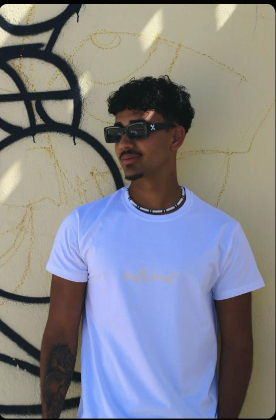

Portfólio - 2026
AILTONMARTINS
A

IDEIAS TRASNFORMADAS EM DESIGN
EM DESIGN.
Licenciado em Design Gráfico e Multimédia pela ESAD.CR, com interesse em comunicação visual, design editorial, UI/UX e desenvolvimento web
Ao longo da minha formação desenvolvi competências na criação de identidades visuais, cartazes, interfaces digitais e experiências interativas.
VER PROJETOSFormação
ESAD.CR
- Licenciatura em Design Multimedia
- Projeto Design Multimédia IV
- Caldas da Rainha, Portugal
Competencias
SKILLS
- Design Gráfico e Editorial
- UI / UX Design
- Identidade Visual
- HTML e CSS
- Figma e Adobe Suite